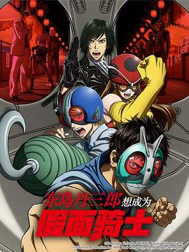

8.9
东岛丹三郎想成为假面骑士
Toujima Tanzaburou wa Kamen Rider ni Naritai
2025
日本
评分 8.9
导演:
池添隆博
演员:
小西克幸 / 茅野爱衣 / 铃村健一 / 齐藤壮马 / 菲鲁兹·蓝 / 津田健次郎
类型:
剧情,动作,奇幻
剧情简介
东岛丹三郎（小西克幸 配音），一个普通的中年上班族，每天早八晚十，在拥挤电车与会议室之间往返。可他的内心深处，却始终燃着少年时代的热血梦想——成为“假面骑士”。这份热情随着岁月流逝、责任堆叠、发际线后退而渐渐黯淡，直到某个平凡的夜晚，他意外卷入了一场真实的“邪恶组织”事件。当“假Shocker”组织在城市发动抢劫，东岛被误认作卧底，被迫穿上老旧的骑士服，驾驶一辆连启动都困难的机车逃亡。曾经只是电视荧幕上的口号，如今成了现实中的战斗号角。他挥拳的瞬间并不优雅，盔甲破裂、动作笨拙，但那份拼命的信念，点燃了被现实压垮的灵魂。影片以“中年重燃热血梦”为核心，用浓烈的怀旧色彩与动态作画勾勒出“成人版的假面骑士幻想曲”。战斗不再是单纯的正义对抗邪恶，而是一个人对抗麻木与无力感的自我救赎。每一次摔倒与爬起，都映照着观众自身在生活中反复的挣扎与坚持。丹三郎的妻子绘里香（茅野爱衣 饰）从最初的无奈，到最后默默在家门口递上头盔，说出的那句“去吧，骑士先生”，成为全片最温柔的高潮。与此同时，年轻警员早见（齐藤壮马 饰）与神秘女子莲（菲鲁兹·蓝 饰）陪伴丹三郎在都市废墟中奔跑，他们共同对抗的，不仅是“假Shocker”，还有心中对理想的怯懦。结尾处，丹三郎站在黎明的高架桥上，风吹动那件破旧披风。他对着升起的太阳喊出：“我还没输！”随即骑上机车，冲进光芒之中——镜头定格，宛如儿时电视机屏幕中闪过的片尾。这是一部专为成年人打造的“假面骑士”致敬作，既热血又感伤，提醒每个早已长大的观众：即便世界再现实，也别忘了那个仍在心中呐喊的少年。